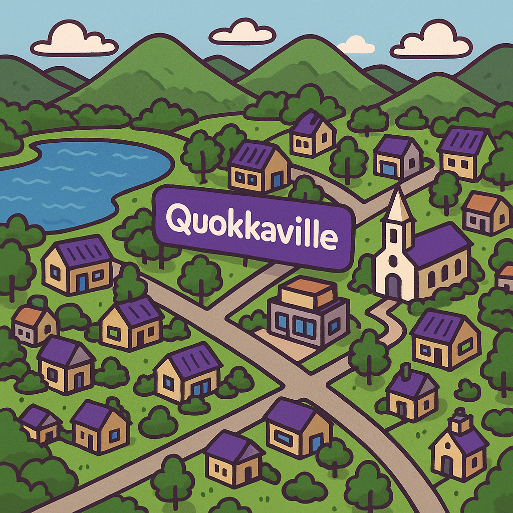
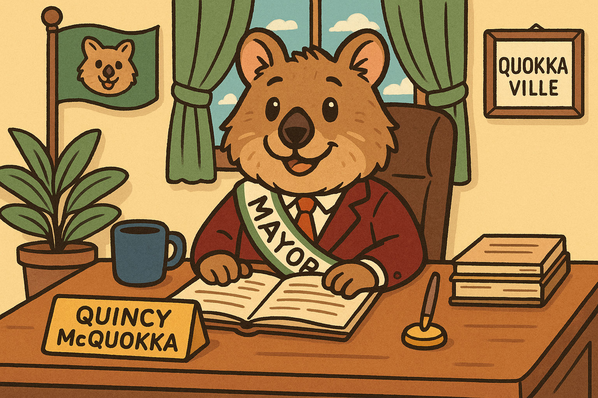

Quokkaville Gallery
Home News History Tourism Gallery Residents
This page is currently under construction.
Welcome to the official homepage for the town of Quokkaville.
On this website, you will find anything and everything you want to know about our friendly town of Quokkaville. We will feature important News, an in-depth History of Quokkaville, all sorts of fun restaurants and attraction that promote Tourism in our town, a photo gallery of the beautiful scenery from local artists and photographers in the Gallery, as well as, Resident biographies of some of Quokkaville's most interesting characters.
To a brighter tomorrow!

Mayor Quincy McQuokka,
Mayor of Quokkaville